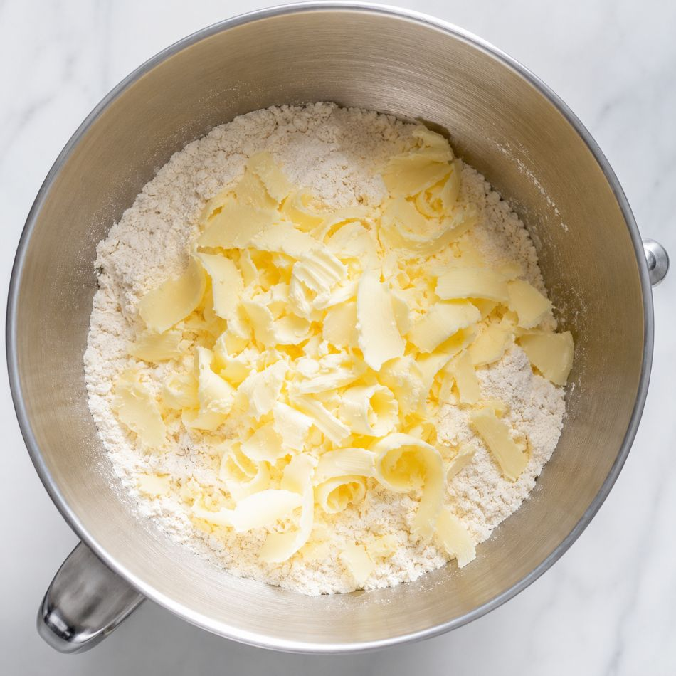
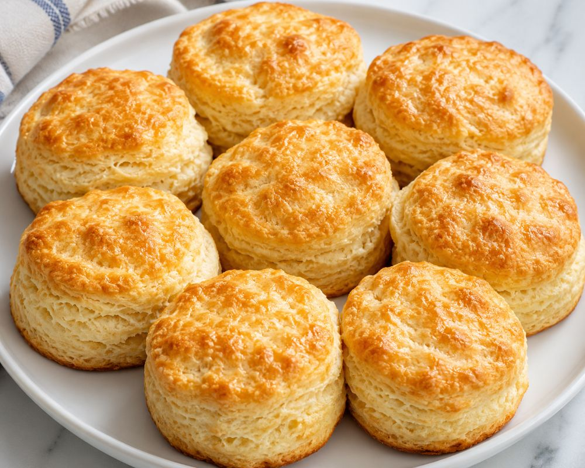

Achieving a tender biscuit is a study in temperature and patience. By utilizing the finer, lower-protein profile of Caputo Chef's Flour combined with the dual-leavening power of baking powder and soda, we produce a biscuit that is exceptionally light.
Ingredients
- 2 cups Caputo Chef's Flour
- 1 tbsp baking powder
- ½ tsp baking soda
- 1 tsp salt
- 1 tbsp granulated sugar
- 6 tbsp cold unsalted butter, cubed or grated
- ¾ cup cold buttermilk
Method
1. Preparation
- Preheat oven to 425°F (220°C).
- In a large bowl, whisk together the flour, baking powder, baking soda, salt, and sugar.
2. The Cut
- Add the cold, cubed or grated butter. Using a pastry cutter, fork, or your fingers, cut the butter into the flour until the mixture resembles coarse crumbs with some pea-sized pieces of butter remaining.

3. Incorporating Buttermilk
- Make a well in the center and pour in the cold buttermilk. Stir with a fork or spatula just until the dough comes together—it should look soft and slightly shaggy, not smooth.
4. Shaping
- Turn the dough out onto a lightly floured surface. Fold and knead gently 5-6 times only.
- Pat the dough into a round about ¾ inch thick. Cut into biscuits with a floured cutter, pressing straight down without twisting.
5. The Bake
- Arrange biscuits on an ungreased or parchment-lined baking sheet.
- Bake for 12–15 minutes. The Indicator: Watch closely—they are ready when the tops are golden brown.

Notes
Keep the butter and buttermilk cold right up until baking—this is what gives biscuits their signature flaky layers. Caputo Chef's Flour is finer and lower-protein than standard all-purpose, so handle the dough gently and do not overwork it. If the dough seems dry, add extra buttermilk a tablespoon at a time.